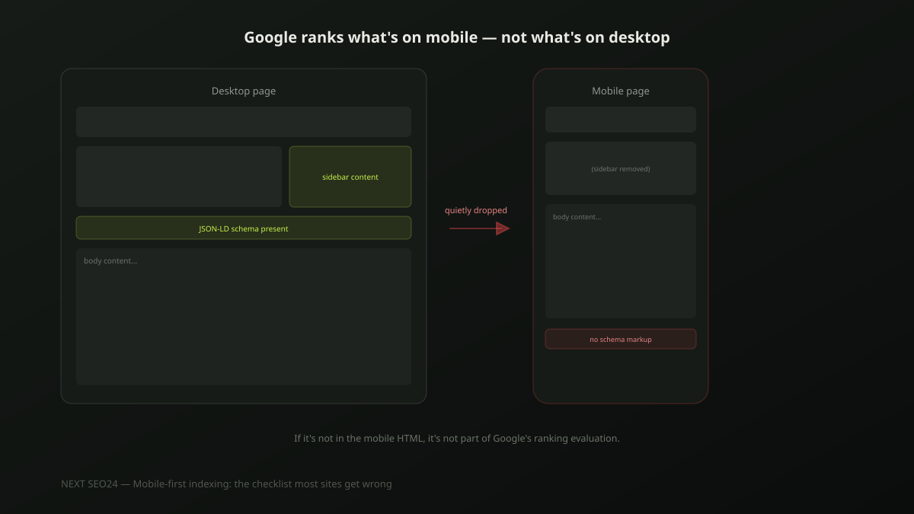

Mobile-first indexing: the checklist most sites get wrong
Google indexes and ranks your site based on the mobile version of your pages, not the desktop one — and has for effectively every site for years now. Content, internal links or structured data that exist only on desktop don't quietly rank a little worse; they don't factor into ranking at all, because Google's evaluation never sees them. Here's the checklist that actually catches the gaps.
What "mobile-first indexing" actually means
Google crawls and evaluates the mobile version of your page as the primary version for indexing and ranking — not as an approximation of the desktop version, but as the actual source Google's ranking systems read. This isn't a future change to plan for; it's been the default behaviour for virtually every site for years. The practical implication is blunt: if something exists on desktop but not on mobile, it might as well not exist for ranking purposes.
The #1 mistake: content missing from mobile, not just hidden
There's an important distinction most site owners miss. Content that's visually collapsed on mobile — behind a tab, an accordion, a "read more" toggle — is still fine; Google can still access and evaluate it as long as it's present in the page's HTML. The actual problem is content that a responsive design decision removes from the mobile markup entirely, often to simplify a cluttered small-screen layout: a sidebar with useful context, a secondary navigation section, supporting paragraphs cut for space. If it's gone from the mobile HTML, it's gone from what Google evaluates for that page, full stop.
Structured data parity between mobile and desktop
JSON-LD structured data must be present and identical on the mobile version of a page, not only on desktop. This is a genuinely common miss on sites built with separate mobile templates or older adaptive-design setups, where the desktop template carries the schema and the mobile template was built independently, without it. Since Google evaluates the mobile version, structured data that only exists on desktop is effectively invisible to the system it was meant to inform.
Tap target sizing: the real numbers
Google's guidance and WCAG accessibility standards both point to roughly 48x48 CSS pixels as a practical minimum for a tappable element, with enough surrounding space that adjacent links or buttons don't overlap for a finger tap. Footer link lists and dense navigation menus are the most common offenders — rows of small text links packed tightly enough that mobile users routinely mis-tap, which both frustrates real visitors and factors into how Google's page experience signals evaluate the page.
Viewport configuration: one tag, outsized consequences
A missing or misconfigured viewport meta tag is a small thing that breaks almost everything else on this list — without it, mobile browsers render the page at desktop width and scale it down, which defeats responsive layouts, tap targets and readable text sizing all at once.
<meta name="viewport" content="width=device-width, initial-scale=1.0">This single line, present in the <head> of every page, is what makes every other mobile fix on this checklist actually take effect. It's easy to check and easy to miss on pages built outside a site's main template — a landing page, a legacy page, a page built by a different tool.
Lazy-loaded content Google can actually crawl
Lazy loading images and below-the-fold content is good practice for mobile speed, but it needs to be implemented so Googlebot can still access the content — native loading="lazy" on <img> tags works correctly; older JavaScript-only lazy-load implementations that only fire on scroll or user interaction can leave content invisible to a crawler that doesn't scroll the way a human does. If in doubt, test with the URL Inspection tool's rendered HTML view.
A pre-publish checklist
- Every content section on desktop also exists in the mobile page's HTML, not just visually hidden but structurally present
- Structured data (JSON-LD) is identical on mobile and desktop versions of every page
- Tap targets — nav links, buttons, footer links — are at least 48x48px with adequate spacing
- The viewport meta tag is present and correctly configured on every page template
- Lazy-loaded content is verified visible in the URL Inspection tool's rendered HTML, not just in a live browser
- Internal links present on desktop are also present and crawlable on the mobile version
If you're not sure whether your mobile and desktop versions actually match, send us your site — this is a fast, concrete check to run.
Frequently asked questions
Does mobile-first indexing mean my desktop site doesn't matter anymore?
Desktop visitors still matter for user experience and conversion, but for ranking purposes, Google evaluates the mobile version of your page almost exclusively — this has been the default for effectively all sites since Google completed the rollout. If content, links or structured data exist only on desktop, Google's ranking evaluation doesn't see them at all.
How do I check whether Google is using my mobile or desktop version?
Search Console's Page Indexing report shows which version of a URL was crawled and indexed, and Google's URL Inspection tool lets you view exactly what was fetched. For virtually all sites today the answer is mobile, but checking confirms it and can surface a page still being crawled as desktop, which usually signals a configuration problem.
What's the single most common mobile-first indexing mistake?
Content that exists on the desktop layout but gets hidden, collapsed or dropped entirely on the mobile version — often unintentionally, through a responsive design decision that hides a section on small screens for visual tidiness. If Google can't see it on mobile, it isn't part of that page's ranking evaluation, no matter how good it looks on desktop.
Not sure your mobile and desktop pages actually match?
Send us your site — we'll check for content gaps, missing structured data and tap-target issues between your mobile and desktop versions.
Chat on WhatsApp →